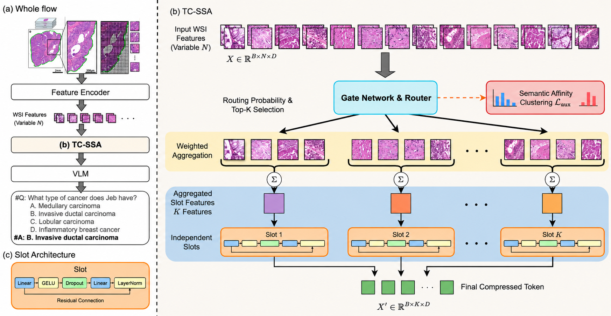
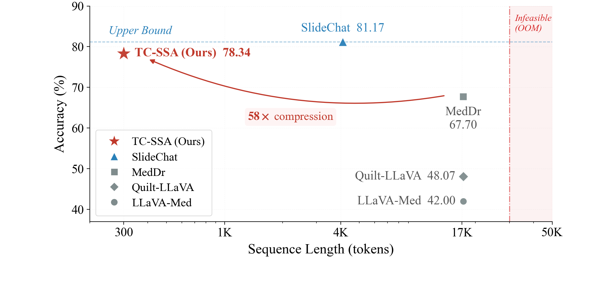
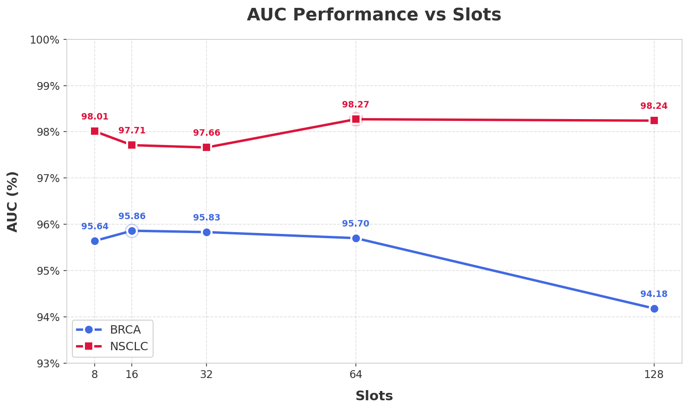
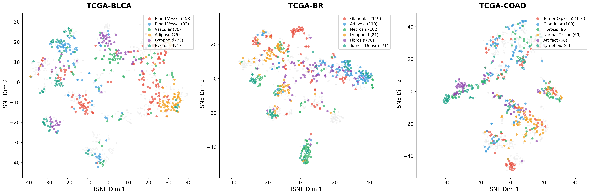

Architecture
Semantic aggregation instead of patch pruning
TC-SSA routes WSI patch embeddings through a gated Top-2 assignment module, aggregates them into K semantic slots, and refines each slot independently. The design keeps all slide evidence in the representation while retaining only 1.7% of visual tokens.

Evaluation
Efficient compression with competitive downstream performance
TC-SSA is evaluated on SlideBench VQA, zero-shot pathology VQA, TCGA MIL classification, and PANDA ISUP grading. It uses 1.72T FLOPs under token compression, compared with 133.3T FLOPs for the uncompressed SlideChat upper bound.
| Method | FLOPs | Microscopy | Diagnosis | Overall | BCNB | WSI-VQA* |
|---|---|---|---|---|---|---|
| SlideChat | 133.3T | 87.64 | 73.27 | 81.17 | 54.14 | 60.18 |
| LLaVA-Med | 1.70T | 47.34 | 32.78 | 42.00 | 30.10 | 26.31 |
| Quilt-LLaVA | 1.70T | 57.76 | 35.96 | 48.07 | 32.19 | 44.43 |
| MedDr | 1.70T | 73.30 | 57.78 | 67.70 | 33.67 | 54.36 |
| TC-SSA | 1.72T | 81.94 | 77.14 | 78.34 | 55.94 | 56.62 |
| Encoder | Method | TCGA-BRCA | TCGA-NSCLC | PANDA |
|---|---|---|---|---|
| GigaPath | RRTMIL | 94.82 | 97.63 | 72.46 |
| GigaPath | 2DMamba | 93.84 | 96.87 | 75.72 |
| UNI | RRTMIL | 94.61 | 97.88 | 74.93 |
| UNI | 2DMamba | 93.08 | 97.14 | 76.37 |
| UNI | TC-SSA | 95.83 | 98.27 | 79.80 |


Expert specialization
Slots learn coherent tissue semantics
Multi-dataset t-SNE visualizations show patch embeddings grouped by assigned expert or slot. The resulting clusters indicate that semantic slot aggregation produces consistent tissue-level organization across datasets.

Citation
Paper and code
Read the paper on arXiv or use the GitHub repository for training, evaluation, and VQA experiments.
@article{chen2026tcssa,
title={TC-SSA: Token Compression via Semantic Slot Aggregation for Gigapixel Pathology Reasoning},
author={Chen, Zhuo and Yang, Xiaoyu and Xu, Lijian},
journal={arXiv preprint arXiv:2603.01143},
year={2026}
}